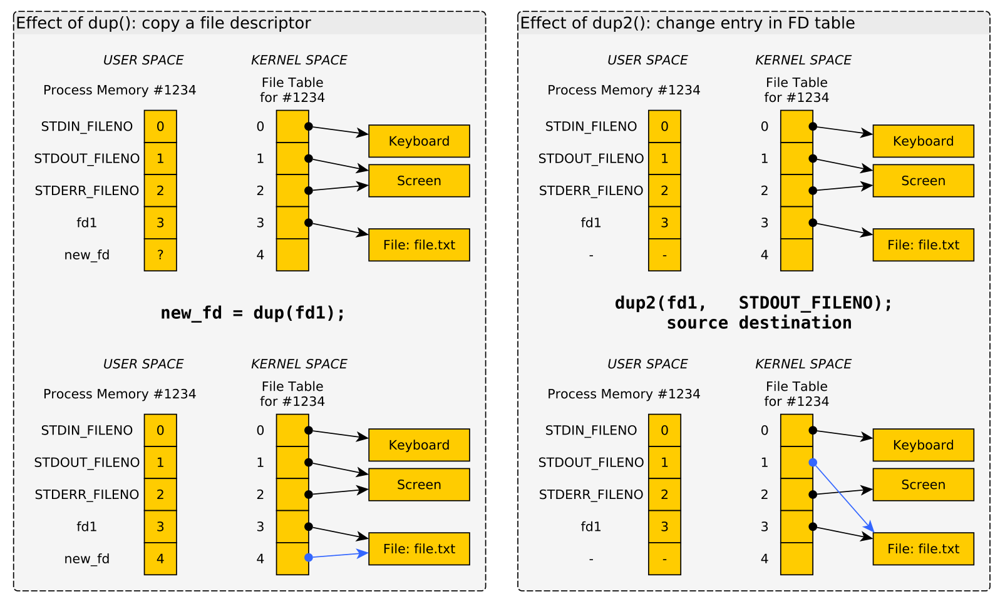

CMSC216 Lab10: I/O Redirection and File Statistics
- Due: 11:59pm Mon 18-Nov-2024 on Gradescope
- Approximately 1.00% of total grade
CODE DISTRIBUTION: lab10-code.zip
- Download the code distribution
- See further setup instructions below
CHANGELOG:
- Mon Nov 11 11:50:54 AM EST 2024
A bug in the Lab10
Makefilewas identified which affects the commandmake test-prob1. The following inMakefileshould be corrected as indicated:68: test-prob1 : test-setup redirect_child 69: ./testy test_redirect_child.org # CORECT: add "_child" to existin test_redirect.org # ./testy test_redirect.org # INCORRECT
The
Makefilehas been updated in the current codepack.
1 Rationale
This lab covers two independent but short concepts in separate problems.
Unix maintains a table of open File Descriptors for each running
process. Using the dup() and dup2() system calls, programs can
manipulate this table to achieve interesting effects, notably
redirection of output from standard locations to other places. This
exercise demonstrates some common techniques for doing so and will
acquaint students with the basics of how the file descriptor table
works and how it is inherited by child processes.
Frequently systems programs must check for the existence of file and
interrogate their properties. The first exercise studies two common
system calls for this task, access() and stat(). It employs them
in a few simple tasks to acquaint students with their use.
Grading Policy
Credit for this exercise is earned by completing the code/asnwers here
and submitting a Zip of the work to Gradescope. Students are
responsible to check that the results produced locally via make test
are reflected on Gradescope after submitting their completed
Zip. Successful completion earns 1 Engagement Point.
Lab Exercises are open resource/open collaboration and students are encouraged to cooperate on labs. Students may submit work as groups of up to 5 to Gradescope: one person submits then adds the names of their group members to the submission.
See the full policies in the course syllabus.
2 Codepack
The codepack for this exercise is linked at the top of this document. Always download it and unzip/unpack it. It should contain the following files which are briefly described.
| File | Use | Description |
|---|---|---|
QUESTIONS.txt |
EDIT | Questions to answer: fill in the multiple choice selections in this file. |
switch_stdout.c |
Study | Problem 1: C file to study to answer QUIZ questions |
redirect_child.c |
EDIT | Problem 1: I/O redirection program to complete |
nums.txt |
Data | Problem 1: Data used in the tests |
stat_demo.c |
Study | Problem 2 demo showing access() / stat() system calls |
newer_file.c |
EDIT | Problem 2 code to complete |
QUESTIONS.txt.bk |
Backup | Backup copy of the original file to help revert if needed |
Makefile |
Build | Enables make test and make zip |
testy |
Testing | Test running scripts |
test_lab10.org |
Testing | Tests for this exercise |
3 Problem 1: I/O Redirection
Programs often need to deal with open files for reading and
writing. The UNIX Operating System (Linux included in this) maintains
a data structure called the File Descriptor Table for all open
files. Some entries in this table are automatically created like
Standard Input and Standard Output. Others are created via the
open() system call. The table is maintained in Kernel Space and can
only be altered via system calls like open() / close() / ~dup() /
dup2().
It is useful to have some diagrams of how the dup() and dup2()
system calls manipulate the table of file descriptors. The following
diagrams will be discussed in lecture and may be used by course staff
to assist students in understanding how programs like
switch_stdout.c work.
Fork and Child File Descriptors

Figure 1: Effects of open()'ing a file then calling fork() : the child and parent both refer to the same open file.
dup() and dup2() System calls

Figure 2: LEFT: Effect of calling dup() to create a duplicate file descriptor table entry. RIGHT: Effect of calling dup2() to overwrite on file descriptor entry with another.
4 Problem 2: stat() and access() System Calls
Basic file statistics such as file size, modification times, and
general file type are maintained by the operating system and are made
available to programs through system calls like stat(). This
populates a struct statbuf with data on the file and the
stat_demo.c file shows the contents and means to access parts of
this struct. Occasionally simple checks like whether a particular file
exists are needed for which the simpler access() system call is
useful.
This problem demonstrates stat() / access() and asks students to
complete a program that uses them.
5 QUESTIONS.txt File Contents
Below are the contents of the QUESTIONS.txt file for the exercise.
Follow the instructions in it to complete the QUIZ and CODE questions
for the exercise.
_________________
LAB10 QUESTIONS
_________________
Exercise Instructions
=====================
Follow the instructions below to experiment with topics related to
this exercise.
- For sections marked QUIZ, fill in an (X) for the appropriate
response in this file. Use the command `make test-quiz' to see if
all of your answers are correct.
- For sections marked CODE, complete the code indicated. Use the
command `make test-code' to check if your code is complete.
- DO NOT CHANGE any parts of this file except the QUIZ sections as it
may interfere with the tests otherwise.
- If your `QUESTIONS.txt' file seems corrupted, restore it by copying
over the `QUESTIONS.txt.bk' backup file.
- When you complete the exercises, check your answers with `make test'
and if all is well, create a zip file with `make zip' and upload it
to Gradescope. Ensure that the Autograder there reflects your local
results.
- IF YOU WORK IN A GROUP only one member needs to submit and then add
the names of their group.
QUIZ Problem 1: Questions on switch_stdout.c
============================================
Analyze the `switch_stdout.c' program. Compile and run it via
,----
| > make switch_stdout
| ...
| > ./switch_stdout
| ...
`----
Analyze the code and focus your attention on the use of `open() /
dup() / dup2()' which this program demonstrates.
Answer the following Questions about the techniques used in this
program. You may need to consult the Manual Page / Documentation on
some functions to answer confidently.
Program Output
~~~~~~~~~~~~~~
Which of the following is the output for `switch_stdout' when run?
(each of 1. 2. 3. appear on separate lines in the output)
- ( ) 1. Now you see me. 2. Now you don't! 3. How mysterious...
- ( ) 1. Now you see me. 2. Now you don't!
- ( ) 1. Now you see me. 3. How mysterious...
- ( ) 1. Now you see me.
open() system call
~~~~~~~~~~~~~~~~~~
The `open()' system call is used to open a file for writing in the
example. What is returned by this system call?
- ( ) A `FILE *' which is passed to subsequent I/O operations or
`NULL' for failure
- ( ) An integer file descriptor which is >= 0 for success and -1 for
failure
- ( ) An integer return code that is 1 for success and 0 for failure
- ( ) A `char *' which is the name of the opened file or `NULL' for
failure
Use of dup()
~~~~~~~~~~~~
Which of the following best describes how the `dup()' system call is
used in `switch_stdout.c'?
- ( ) It creates a duplicate of a file descriptor allowing standard
output to be restored to the screen late in the program.
- ( ) It manipulates the file descriptor table so output that would go
to the screen goes into a file instead.
- ( ) It duplicates an existing file creating an efficient copy of it
on disk.
- ( ) It creates a child process that prints to a file instead of the
screen.
Use of dup2()
~~~~~~~~~~~~~
Which of the following best describes how the `dup2()' system call is
used in `switch_stdout.c'?
- ( ) It creates a duplicate of a file descriptor allowing standard
output to be restored to the screen late in the program.
- ( ) It manipulates the file descriptor table so output that would go
to the screen goes into a file instead.
- ( ) It duplicates an existing file creating an efficient copy of it
on disk.
- ( ) It creates a child process that prints to a file instead of the
screen.
printf() changes in behavior
~~~~~~~~~~~~~~~~~~~~~~~~~~~~
Good old `printf()' is used in `switch_stdout.c' in several places but
seems to change its behavior in some of these spots. Which of the
following best describes this variation in behavior?
- ( ) `printf()' is called with different arguments that cause it to
print to different destinations, sometimes standard output,
sometimes a file
- ( ) `printf()' is called the same way in each case but automatically
begins printing to a file that is `open()''d and when it is
`close()''d, `printf()' reverts to printing to the screen
- ( ) `printf()' is called the same in each case and always prints to
standard output but by changing what is in the file descriptor table
at that position, output goes to the screen or to a file.
CODE Problem 1: Complete redirect_child.c
=========================================
An incomplete file called `redirect_child.c' is present in the code
pack which is intended to preform the following operations.
1. Create a child process
2. The child process redirects its output into a file
3. The child process then exec()'s a new process image which will
place output in the file specified
4. The parent process blocks until the child is complete and then
shows the output file.
A skeleton is provided but a number of TODO/??? items must be filled
into to complete the program. A number of the techniques are required
to complete the code
- Process manipulation from previous labs
- I/O redirection demonstrated in this lab in `switch_stdout.c'
Employ these to complete the program and pass the tests available in
`make test-code'.
A correct run looks like the following.
,----
| > make
| gcc -Wall -Werror -g -o switch_stdout switch_stdout.c
| gcc -Wall -Werror -g -o redirect_child redirect_child.c
|
| > ./redirect_child
| usage: ./redirect_child <childfile>
|
| > ./redirect_child childout.txt
| Removing file 'childout.txt' prior to run via a subshell
| Creating a child to do 'wc'
| Parent waiting for child to complete
| Child redirecting output to 'childout.txt', then exec()'ing
| Child complete, return code 0
| Showing output of 'childout.txt' via 'cat' command
| 25 25 66 nums.txt
|
| > cat childout.txt
| 25 25 66 nums.txt
`----
QUIZ PROBLEM 2: Questions on stat_demo.c
========================================
Analyze the `stat_demo.c' program. Compile and run it via
,----
| >> make stat_demo
| ...
| >> ./stat_demo somefile.txt
| ...
| >> ./stat_demo a_dirname/
`----
Finally, you can contrast the behavior of `filestats.c' to the shell
command `stat' which provides similar functionality.
Answer the following questions about how the system call works.
File Access
~~~~~~~~~~~
Which of the filling best describes how the `access()' system call is
used?
- ( ) It alters read/write access to a file by adjusting its mode bits
- ( ) It is called to determine if a file exists using the `F_OK' flag
- ( ) It ensures a file exists and can be accessed by creating if
necessary
- ( ) It must be called before `stat()' in order to initialize a
`struct stat' data structure
File Size
~~~~~~~~~
How does `stat()' report the Size of a file?
- ( ) An integer is passed to the calls to be set to the size
- ( ) The return value is the number of bytes in the file
- ( ) The size is printed to standard output during the function call
- ( ) The field `sb.st_size' contains the number of bytes in file
File Kind
~~~~~~~~~
`stat()()' report the "kind" of file being queried. How is this
information used in `stat_demo.c'?
- ( ) The field `sb.st_filetype' is set to a string like "file" or
"pipe" to indicate the type of a file and that field can be printed
directly
- ( ) An integer passed in as an address to the call is set to the
type of the file
- ( ) The kind is encoded in the `sb.st_mode' field of the struct and
macros are used to distinguish the kind and print an appropriate
message.
- ( ) The kind is encoded in the `sb.st_mode' field of the struct and
functions are used to distinguish the kind and print an appropriate
message.
Which one of the following is NOT a file "kind" reported by `stat() /
lstat()'
- ( ) Directory
- ( ) Binary
- ( ) Socket
- ( ) Symbolic Link (symlink)
mtime / ctime
~~~~~~~~~~~~~
Do some research and determine the difference between the `ctime' and
`mtime' fields that are reported by `stat() / lstat()'. Which of the
following best describes this difference:
- ( ) `mtime' and `ctime' actually always report the same time and
their redundancy is a historical oddity.
- ( ) `mtime' indicates the last time that the file was moved from one
directory to another while `ctime' indicates the last change to the
data in the file
- ( ) `mtime' is the last time of modification when data was altered
in the file while `ctime' is the last access time when data was read
from the file
- ( ) `mtime' is when the actual data of a file changes while `ctime'
is associated with permissions, links, or other meta data changes
associated with the file.
Additional Items to Observe
~~~~~~~~~~~~~~~~~~~~~~~~~~~
The function `ctime()' and `strmode()' both use an interesting
technique to make it possible to easily produce a printable string for
situations like those in `filestats.c'. Time permitting, examine the
source code for `strmode()' in `strmode.c' and discuss with a TA how a
string is returned but there is no requirement to free that string.
Finally, like many system calls, `stat()' has a command-line
equivalent in the form of the `stat' command which prints to the
screen many of the statistics of a file and is useful at times.
,----
| >> stat A.txt
| File: A.txt
| Size: 2 Blocks: 8 IO Block: 4096 regular file
| Device: 254,1 Inode: 7080409 Links: 1
| Access: (0644/-rw-r--r--) Uid: ( 1000/kauffman) Gid: ( 985/ users)
| Access: 2024-11-07 14:15:55.332936076 -0500
| Modify: 2024-11-07 14:10:55.332925991 -0500
| Change: 2024-11-07 14:15:55.329602657 -0500
| Birth: 2024-11-06 16:43:41.436780892 -0500
`----
CODE PROBLEM 2: newer_file.c Program
====================================
Fill in the template code provided in `newer_file.c'. The intent of
the program is to ensure that two named files exist and then compare
the modification time of them to print an older vs newer file. This
will require use of the `access()' and `stat()' system calls as well
as a `diff_timespec()' function that is provided in the
template. Below is a demonstration of how the complete program should
work.
,----
| >> make newer_file # build
| gcc -Wall -Werror -g -Og -o newer_file newer_file.c
|
| >> ./newer_file
| Usage: ./newer_file <file1> <file2>
|
| >> echo A > A.txt # create 3 files
| >> echo B > B.txt
| >> echo C > C.txt # newest
| >> touch -d '-5min' A.txt # oldest
| >> touch -d '-3min' B.txt # middle
|
| >> ./newer_file A.txt B.txt
| A.txt is OLDER than B.txt
|
| >> ./newer_file C.txt B.txt
| C.txt is NEWER than B.txt
|
| >> ./newer_file C.txt C.txt
| C.txt and C.txt are EQUAL in age
|
| >> ./newer_file C.txt X.txt
| X.txt cannot be accessed
|
| >> ./newer_file Z.txt X.txt
| Both Z.txt and X.txt cannot be accessed
`----
6 Submission
Follow the instructions at the end of Lab01 if you need a refresher on how to upload your completed exercise zip to Gradescope.